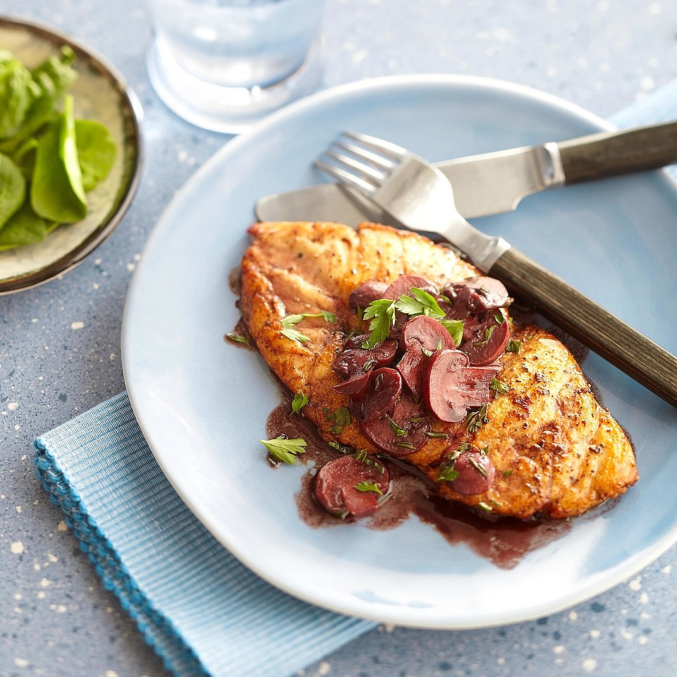

Chicken and Red Wine Sauce

Description:
Ready in 35 minutes, this chicken dish will satisfy you
any night of the week!
180 calories; protein 17g; carbohydrates 2.8g; fat 7.8g;
cholesterol 62.4mg; sodium 354.9mg
Ingredients:
- 5-ounce skinless, boneless chicken breast halves
- 1/4 teaspoon salt
- 1/4 teaspoon ground black pepper
- 2 tablespoons butter
- 1 cup sliced mushrooms
- 2/3 cup red wine or reduced-sodium chicken broth plus
1 tablespoon red wine vinegar
- 1/2 cup reduced-sodium chicken broth
- 1 tablespoon balsamic vinegar
- 2 teaspoons snipped fresh thyme
- 2 teaspoons snipped fresh parsley
Steps:
- Place each chicken breast half between two pieces of plastic
wrap. Using the flat side of a meat mallet, pound chicken lightly
to about 1/4 inch thick. Discard plastic wrap. Sprinkle chicken
with salt and pepper.
- In a 12-inch skillet melt 1 tablespoon of the butter over medium-high
heat. Reduce heat to medium. Add chicken to skillet. Cook chicken for
6 to 8 minutes or until no longer pink, turning once. Transfer chicken
to a platter; cover with foil to keep warm. Turn off burner or remove
skillet from heat.
- Add mushrooms, wine, broth, vinegar and thyme to the hot skillet. Return
skillet to heat. Cook and stir to scrape up the browned bits from the
bottom of the pan. Bring to boiling. Boil gently, uncovered, about 8
minutes or until liquid is slightly thickened and reduced. Reduce heat
to medium-low.
- Add remaining 1 tablespoon butter and parsley, stirring until butter is
melted. Serve sauce over chicken.